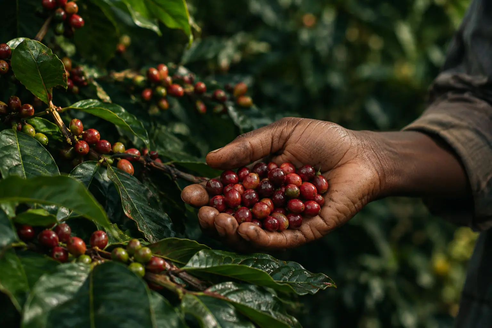
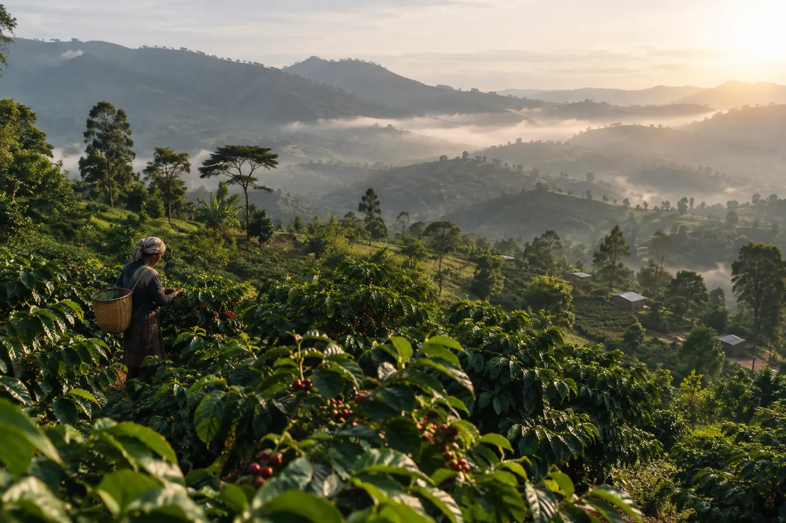
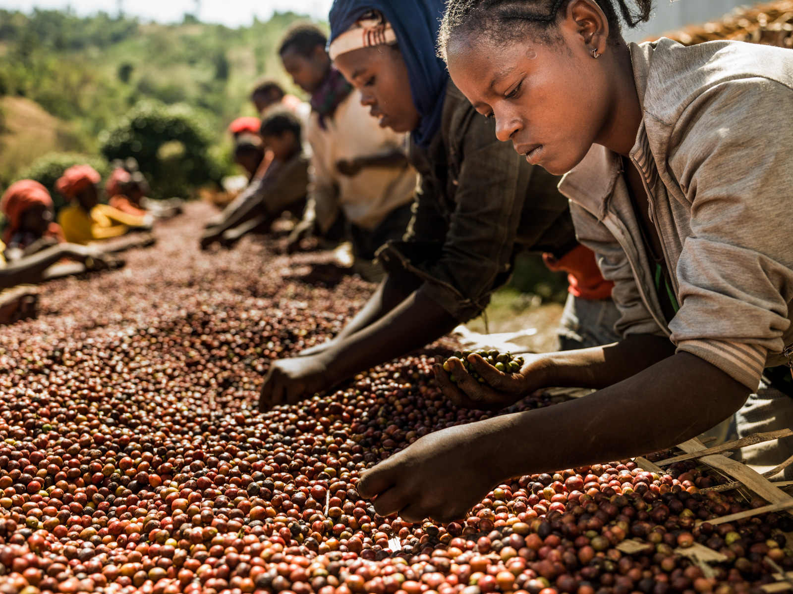
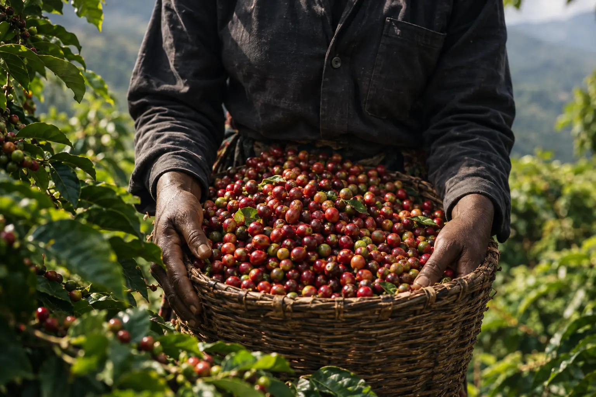
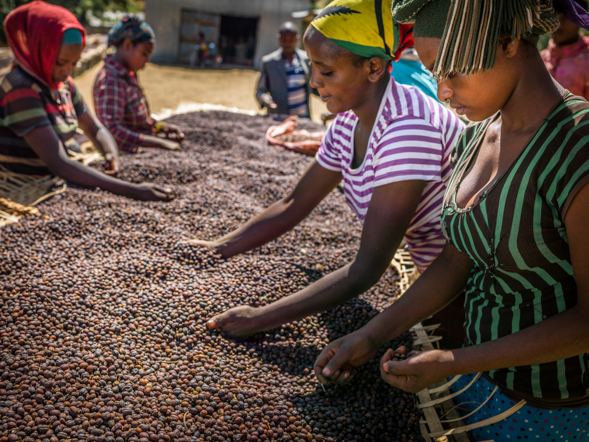

Consistent Quality
Every shipment is cup-tested and inspected to meet strict grading standards that global specialty buyers expect.
Akoya Coffee Exports connects global specialty roasters and green coffee importers to authentic, traceable lots from Ethiopia's most renowned growing micro-regions.
We exist to serve as a transparent conduit, elevating the livelihoods of smallholder growers while delivering consistent, pristine micro-lots to meticulous roasters globally.ADDIS ABABA, ETHIOPIA • B2B EXPORT PARTNER
Traceable lots from Ethiopia’s most sought-after growing zones, selected for clarity, sweetness, and cup character.




Akoya Coffee Export is designed to meet the demands of specialty importers and green coffee buyers who value consistency, traceability, and honest communication.
Every shipment is cup-tested and inspected to meet strict grading standards that global specialty buyers expect.
We maintain clear documentation from the farm to the container, with transparent origin and processing records.
We handle all phytosanitary, export, and trade documentation needed to keep order flow smooth and compliant.
We build lasting relationships with buyers who value reliable delivery, transparent communication, and long-term trust.
Premium washed and natural Arabica from Southern Keffa and select Ethiopian origins, graded and export-ready.
Bright, clean cup with floral notes and citrus acidity. Fully washed in certified washing stations.

Sun-dried on raised beds. Rich body, berry sweetness, complex fruity aftertaste.
Wild blueberry, jasmine, and wine-like complexity from Guji.

Our quality control process follows international green coffee standards. Each lot undergoes physical and sensory evaluation before being approved for export.
We work closely with producer groups, exporters, and buyers to maintain quality, clarity, and continuity from harvest through final delivery.